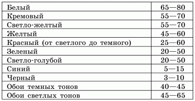

Отделка стен красками.

Краска – материал сравнительно недорогой. Вместе с тем в специализированных магазинах представлено такое количество лакокрасочных материалов, что очень трудно сразу сделать оптимальный выбор. Более того, многообразие колеров позволяет прибегнуть к смешиванию различных красок и в результате получить желаемый оттенок. Однако для этого нужно сначала научиться смешивать краски в небольшой емкости. Следует налить туда немного краски, затем добавить краситель и посмотреть, какой цвет получится. Не стоит забывать и о том, что интенсивность цвета готовой окрашенной поверхности и цвета краски в баночке могут значительно отличаться друг от друга.
Если у вас остаются сомнения по поводу того, какой цвет краски наилучшим образом подойдет для отделки стен, можно предварительно приобрести в специализированном магазине несколько пробников – маленьких баночек с краской различных цветов. Следует нанести несколько мазков на участок самой темной стены (например, под окном) и на участок самой светлой стены, обычно находящейся напротив окна. Подождав положенное для высыхания время, нужно обратить внимание на то, как окрашенная поверхность будет выглядеть при искусственном и естественном освещении, не вызывает ли ее оттенок ощущения подавленности или дискомфорта. Стоит прислушаться также и к мнению остальных членов вашей семьи. Только после таких подготовительных работ можно быть уверенным в том, что данная краска действительно подойдет для отделки стен в комнате.
Как и любой другой вид отделки помещения, окраска стен имеет свои нюансы. Здесь все важно, нет ничего второстепенного. О том, как правильно подобрать кисть, какой цвет краски подходит больше всего, какие виды подготовительных работ нужно провести, сама технология окраски – все это станет понятным после изучения данной главы. В дальнейшем можно с успехом применить свои знания на практике.
Все виды красок, эмалей, олиф и лаков, используемых мастерами-отделочниками, можно условно разделить на две группы. К первой группе относятся прежде всего материалы для подготовки поверхности к окрашиванию. Вот их перечень:
1. Олифы.
2. Клеевые составы.
3. Огрунтовочные составы.
4. Шпаклевки.
Ко второй группе относятся материалы для окрашивания:
1. Краски.
2. Эмали.
3. Морилки.
4. Лаки.
5. Побелочные составы.
Окраска стен – очень дорогое удовольствие, если использовать импортные красочные материалы. Хорошая качественная краска (например, колеровочная) далеко не каждому придется по карману, а дешевые материалы не всегда качественны. Помимо этого, краски отечественного производства не отличаются большим многообразием цветов. Хотите попробовать создать свои цветовые гаммы? Для того чтобы получить нужный оттенок, надо знать простые правила смешивания цветов.
Ниже приведены примеры смешивания цветов. Сначала указывается исходный цвет, затем добавочный и через знак равенства – тот, который вы получите в результате.
Желтый + красный = оранжевый
Желтый + синий = зеленый
Желтый + коричневый = желто-коричневый
Желтый + зеленый = резеда
Желтый + фиолетовый = зелено-коричневый
Желтый + серый = грязно-желтый
Зеленый + красный = коричневый
Зеленый + желтый = салатовый
Зеленый + синий = сине-зеленый
Зеленый + коричневый = оливково-зеленый
Зеленый + фиолетовый = зелено-коричневый
Зеленый + серый = грязно-коричневый
Красный + синий = вишневый
Красный + желтый = оранжевый
Красный + коричневый = красно-коричневый
Красный + зеленый = коричневый
Красный + фиолетовый = красно-коричневый
Красный + серый = темно-коричневый
Синий + красный = вишневый
Синий + желтый = зеленый
Синий + коричневый = темно-коричневый
Синий + зеленый = сине-зеленый
Синий + серый = грязно-синий
Фиолетовый + красный = красно-фиолетовый
Фиолетовый + синий = сине-фиолетовый
Фиолетовый + желтый = зелено-коричневый
Фиолетовый + серый = грязно-фиолетовый
Фиолетовый + коричневый = темно-коричневый
Фиолетовый + зеленый = зелено-коричневый
Серый + красный = темно-красный
Серый + синий = грязно-синий
Серый + желтый = грязно-желтый
Серый + зеленый = грязно-зеленый
Серый + фиолетовый = грязно-фиолетовый
Не секрет, что на новый цвет стен хозяева квартиры обращают особое внимание только в первые недели после ремонта. С течением времени интерьер становится привычным, но ученые-психологи отмечают, что цвета, окружающие человека, продолжают оказывать самое непосредственное влияние на его работоспособность, настроение, самочувствие, отношение к другим людям.
Например, в комнате, стены которой окрашены в ярко-оранжевый цвет, человек в легкой летней одежде не мерзнет даже при довольно умеренной температуре воздуха – 16° С. Однако в помещении, окрашенном в серо-голубые тона, при подобной же температуре легко одетый человек начинает зябнуть.
Иначе говоря, приступая к окраске стен, нужно уделить самое пристальное внимание подбору цветовой гаммы. Для этого прежде всего необходимо тщательно изучить основные характеристики цветов.
Все цвета, существующие в природе, делятся на две группы:
1. Ахроматические.
2. Хроматические.
К цветам первой группы относятся белый, черный, а также все оттенки серого. Вспомним поговорку «Каждый охотник желает знать, где сидит фазан». По названию первых букв в каждом слове можно правильно определить 7 цветов спектра, следующие один за другим и относящиеся ко второй группе. Помимо этого, во вторую группу входят также многочисленные промежуточные тона.
У каждого цвета есть коэффициент отражения света, обозначаемый в процентах к условной единице. Таким образом, чем выше коэффициент, тем больше света отражает тот или иной цвет. Если вы хотите, чтобы комната была светлой, нужно, воспользовавшись приведенной ниже таблицей, подобрать цвет с высоким коэффициентом отражения света.
Таблица 2. Отношение цвета к коэффициенту отражения света
Для стен подходящим коэффициентом отражения цвета считается 60–70.
При подборе цветов не следует забывать о том, что они обладают способностью удалять или, наоборот, приближать предметы. Желто-зеленый, красный, оранжевый, желтый и светлые ахроматические цвета считаются сближающими, а сине-зеленый, голубой, зеленый и темные ахроматические – удаляющими.
Эту способность цветов можно применить и при отделке стен. Например, маленькая комната, оклеенная обоями синего цвета, визуально будет казаться больше. И наоборот, большое помещение с обоями оранжевого цвета зрительно уменьшит комнату чуть ли не вдвое.
Выше уже говорилось о том, что цвет влияет не только на психику человеку, но и на его физическое состояние. Поэтому комнаты, выходящие на юг, желательно окрашивать в холодные тона (голубой, синий, сине-зеленый), а комнаты, смотрящие окнами на север, – в теплые (красный, желтый, желто-зеленый, оранжевый).
При подборе цветовой гаммы для той или иной комнаты нужно обязательно учитывать и ее функциональное назначение. Считается, что теплые цвета вызывают прилив бодрости у большинства людей, однако быстро утомляют психику и, кроме того, негативно влияют на зрение. Для комнаты, в которой дети будут делать уроки, следует подобрать спокойный цвет, например светло-зеленый. Именно этот цвет больше других повышает работоспособность.
В яркие цвета обычно окрашивают стены в детских комнатах и кухнях, не забывая при этом, что цвет мебели должен быть более спокойным. В противном случае ваши домочадцы, которым предстоит проводить много времени в этих помещениях, будут постоянно испытывать чувство усталости, вялость или раздражительность. Довольно часто в детской комнате помещают множество игрушек, как правило окрашенных в яркие цвета. В таком случае стены следует окрашивать в светлые ахроматические цвета.